Você trata, mas não protege
O ácido clareia por baixo enquanto o sol — e a luz da tela do celular — reativa a melanina por cima. Sem FPS alto todo dia, a mancha volta em semanas.
Frete grátis para todo o Brasil. Garantia de 30 dias. Pagamento via Pix com aprovação na hora.
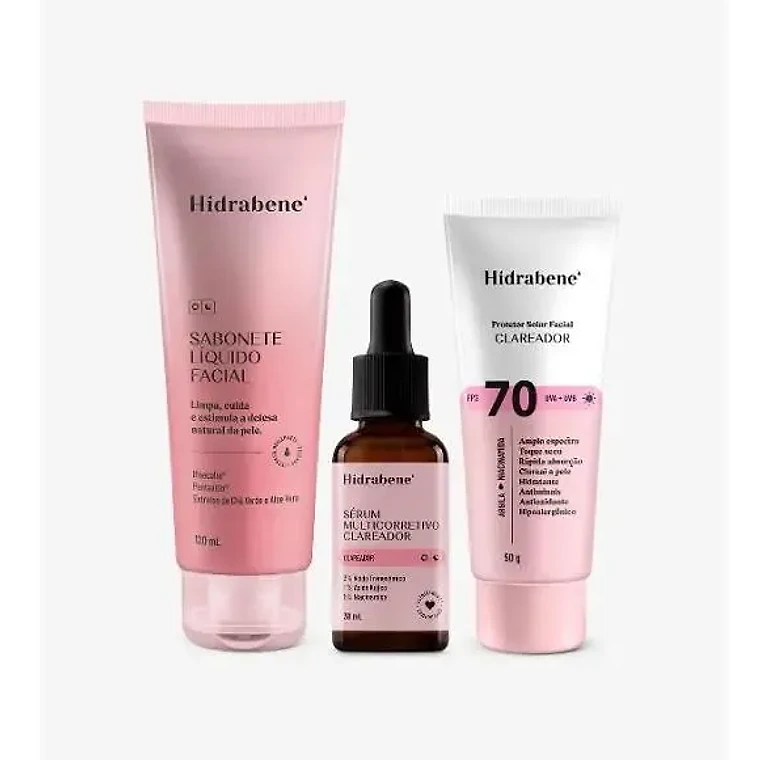
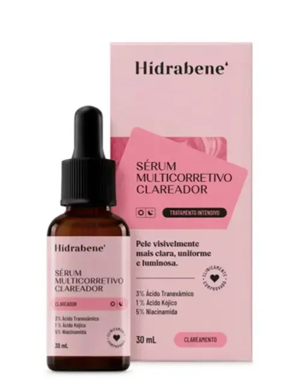
Sérum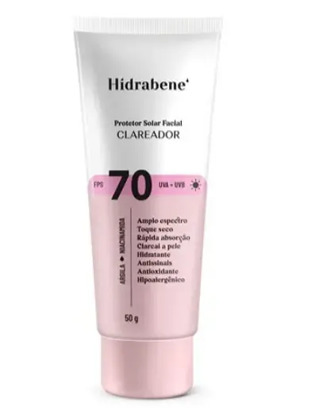
ProtetorPara manchas de acne, sol e melasma
Três produtos, três etapas: o sabonete abre caminho, o sérum com Ácido Tranexâmico, Kójico e Niacinamida trata a fundo, e o Protetor FPS 70 impede a mancha de voltar. A maioria das clientes vê o tom emparelhar entre a 3ª e a 4ª semana.
Compra segura · Pix aprovado na hora · 30 dias de garantia
BellaFios Gummies — Cabelo Forte & Brilhante
60 unidades, vale R$ 39,90. Pele e cabelo cuidados de uma vez.
Não é que você escolheu o produto errado. É que faltou fechar o ciclo.
O ácido clareia por baixo enquanto o sol — e a luz da tela do celular — reativa a melanina por cima. Sem FPS alto todo dia, a mancha volta em semanas.
Resíduo de maquiagem, oleosidade e protetor do dia anterior formam uma barreira. O sérum caro fica na superfície e você culpa a fórmula.
A célula que produz o pigmento leva cerca de 28 dias para se renovar. Parar na 2ª semana é parar exatamente antes do resultado aparecer.
É por isso que o kit vem com os três. Limpar, tratar e proteger não são três produtos — são três etapas do mesmo protocolo.
Dois minutos de manhã, dois à noite. Cada produto tem uma função — nenhum é acessório.
Sabonete Líquido Facial, 120 ml. Tira oleosidade, poluição e o resíduo do protetor do dia sem agredir a barreira. É o passo que faz o sérum penetrar de verdade, em vez de ficar por cima.
Sérum Multicorretivo Clareador, 30 ml. O Ácido Tranexâmico reduz a produção de melanina e age no fator vascular ligado ao melasma. O Kójico apaga mancha de acne e sol; a Niacinamida uniformiza e hidrata, para a pele não descamar.
Protetor Solar Facial Clareador FPS 70, 50 g, com Argila e Niacinamida. É o passo que quase todo mundo pula — e o motivo nº 1 da mancha voltar. Toque seco e hipoalergênico: dá para usar todo dia sem a pele brilhar.
O ritmo médio relatado por quem usa o protocolo completo, manhã e noite, sem pular o protetor.
Ainda não é clareamento. É a pele voltando a respirar: menos oleosidade na zona T, menos aspereza, maquiagem assentando melhor.
É aqui que a maioria desiste — e é exatamente quando o ativo começou a agir. A mancha perde o contorno duro e se dissolve na pele em volta.
O ciclo de renovação da pele fecha e o tom emparelha. É o ponto em que a diferença aparece na foto — e não só no espelho de perto.
Melasma e manchas profundas pedem de 8 a 12 semanas. Com o FPS 70 todo dia, o que você já clareou não regride no primeiro fim de semana de sol.
Pele é individual: manchas mais profundas levam mais tempo, e é por isso que o kit de 3 unidades (6 meses) cobre o tratamento inteiro sem faltar produto no meio do caminho.
Vídeos de quem usou o protocolo completo
"Kits chegaram rápido. Protetor solar maravilhoso não fica com a pele oleosa, sabonete limpa bem a pele, sérum tem cheiro suave e percebe-se que tem cheiro dos ácidos na composição. Iniciei uso recentemente.. na torcida pra clarear manchas de melasma."
Avaliou em 27/08"Tenho 20 dias de uso contínuo e é a primeira vez que realmente vejo diferença ainda mais minha pele que tem mancha de melasma. O brilho, claridade e vicosidade da pele estão ótimas... Estou adorando o resultado, de verdade!"
Avaliou em 30/06"Fantástico com apenas 10 dias de uso já percebi melhoras nas manchas que tinham no meu rosto."
Avaliou em 11/08"Antes de adquirir o produto fiquei receosa. Assim que comecei a usar já vi melhoras na pele."
Avaliação anônima · 23/08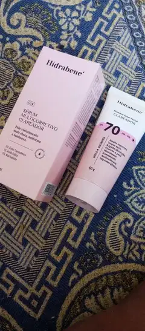
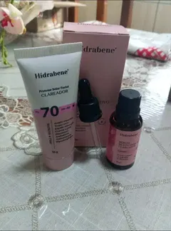
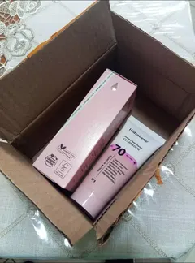
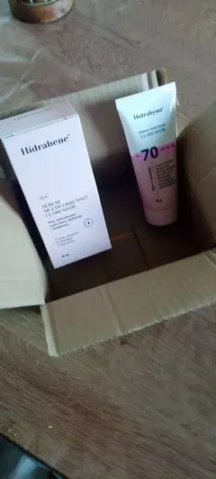
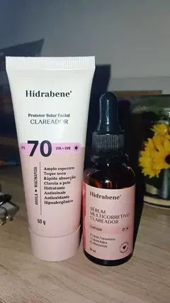
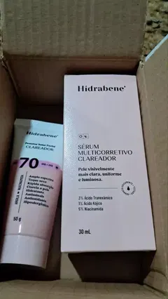
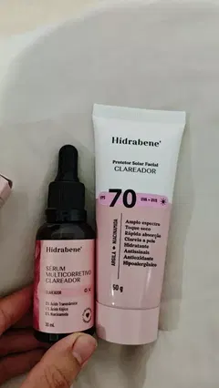
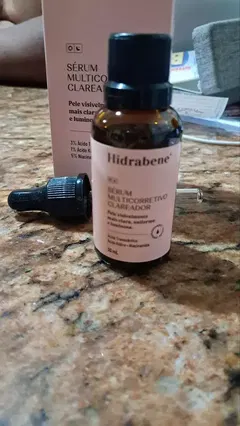
Dá. Só não costuma dar certo — e sai mais caro no fim.
| Protocolo completo | Só o sérum | Clínica / laser | |
|---|---|---|---|
| Limpa antes para o ativo penetrar | Sim | Não | Sim |
| Ativos clareadores em concentração dermatológica | Sim | Sim | Sim |
| Bloqueia o rebote (FPS 70 + luz visível) | Sim | Não | Só comprando à parte |
| Precisa sair de casa e marcar horário | Não | Não | Sim |
| Custo dos 6 primeiros meses | R$ 66,90kit de 3 unidades | R$ 300 a R$ 600 | R$ 2.000+ |
| Devolução do dinheiro se não gostar | 30 dias | Varia | Não |
Valores de clínica e de sérum avulso são faixas de mercado, para efeito de comparação.
O preço que você vê na tela é o preço final.
Pix processado por gateway certificado, com confirmação automática. Seus dados trafegam criptografados e não ficam armazenados na loja.
O código de rastreio chega no seu e-mail assim que o pedido sai do centro de distribuição. Dá para acompanhar pela página de rastreio.
5 a 9 dias úteis, sem valor mínimo. Com pressa? No pagamento você pode somar o frete expresso por R$ 9,90 e receber em 1 a 3 dias úteis.
Use o protocolo por 30 dias inteiros. Mudou de ideia por qualquer motivo — resultado, textura, cheiro — e devolvemos 100% do que você pagou. Basta responder o e-mail do pedido: a gente resolve por ali mesmo.
Frete grátis, brinde incluso e 30 dias para testar em casa. Se não gostar, devolvemos tudo.
Pix aprovado na hora · Compra 100% segura
2 Kits Completos
BellaFios Gummies incluso — R$ 39,90 grátis
O CPF é exigido para emitir a nota fiscal do pedido.
Você vai para o ambiente de pagamento da Korvex, onde preenche os dados e recebe o Pix. Leva menos de um minuto.
1. Copie o código abaixo
2. Abra o app do seu banco, escolha Pix Copia e Cola e cole — o código vale por 24 horas
A tela vira sozinha quando o pagamento cair. Mandamos o código também para o seu e-mail — dá para pagar depois, de qualquer aparelho, sem preencher nada de novo.
Seu pedido está confirmado. Ele é postado em até 24 horas úteis e o código de rastreio chega no seu e-mail.
Guarde o número do pedido. Qualquer dúvida: contato@exemplo.com.br